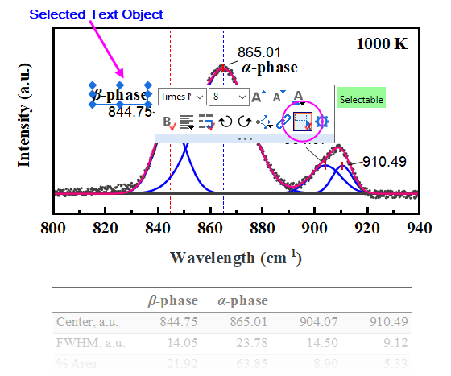
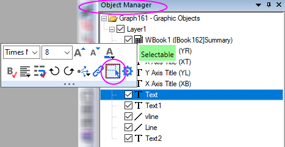
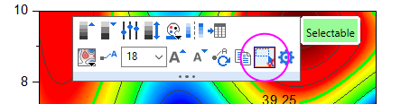

FAQ-1158 Warum kann ich keine Diagrammelemente wie Zeichnung, Layer oder Textobjekte auswählen?
Cannot-select-graph-layer-plot
Letztes Update: 10.11.2022
 Auswählbare Elemente für Layer, Zeichnungen und Beschriftungen in einem Diagramm auf YouTube steuern
Auswählbare Elemente für Layer, Zeichnungen und Beschriftungen in einem Diagramm auf YouTube steuern
Das Bearbeiten der meisten Diagrammelemente wie Diagrammlayer, Zeichnungs- oder Diagrammobjekte wird initiiert, indem Sie auf das Element auf der Diagrammseite klicken. Obwohl dies intuitiv und im Allgemeinen wünschenswert ist, ist es zuweilen nicht hilfreich:
- Sie haben Zeit investiert, um Element auf der Diagrammseite genau anzuordnen, und Sie möchten diese Anordnung nicht verändern.
- Sie versuchen, eine Zeichnung auszuwählen, aber es wird teilweise von einer anderen Zeichnung verdeckt, so dass Sie wiederholt die falsche Zeichnung auswählen.
- Sie versuchen, das Layer in einem Konturdiagramm auszuwählen, aber Sie können nur die Datenzeichnung auswählen.
Elementauswahl mit Hilfe der Minisymbolleiste deaktivieren:
Sie können ggf. die Auswahl des ausgewählten Elements durch Klicken auf die Schaltfläche Auswählbar auf der Minisymbolleiste deaktivieren, wodurch das "rote Häkchen" neben ihm entfernt wird.
- 
Elemenauswahl mit Hilfe der Objektverwaltung wiederherstellen:
- Beachten Sie, dass die Objektverwaltung zwei Ansichten hat -- Zeichnungen zeigen und Diagrammobjekte zeigen -- und dass diese zwei Ansichten durch einen Rechtsklick auf einen leeren Bereich der Objektverwaltung gewechselt und die gewünschte Ansicht ausgewählt werden kann.
- Wählen Sie in der Objektverwaltung das "unauswählbare" Element und klicken Sie, wenn die Minisymbolleiste angezeigt wird, auf die Schaltfläche Auswählbar (dies fügt ein rotes Häkchen daneben hinzu).
- 
- Jetzt sollten Sie auf das "unauswählbare" Element im Diagrammfenster klicken können -- sei es der Diagrammlayer, eine Zeichnung oder ein Diagrammobjekt -- und es für die Bearbeitung auswählen können.
Konturdiagramme - ein Spezialfall:
Wenn Sie auf ein Konturdiagramm klicken, wählen Sie per Standard die Datenzeichnung. Wenn Sie versuchen, den Layer auszuwählen, müssen Sie einen der folgenden Schritte ausführen:
- Drücken Sie die Alt-Taste und klicken Sie auf die Zeichnung.
- Gehen Sie zur Objektverwaltung und klicken Sie in der Ansicht Zeichnungen zeigen auf das Layersymbol.
- Klicken Sie auf das Konturdiagramm und klicken Sie, wenn die Minisymbolleiste angezeigt wird, auf die Schaltfläche Auswählbar, um die Auswahl der Datenzeichnung zu deaktivieren. Klicken Sie jetzt auf die Zeichnung, um den Layer auszuwählen.
- 
Schlüsselwörter:Diagrammobjekt, Diagrammbearbeitung, Objektverwaltung, auswählbar, Zeichnungen zeigen, Diagrammobjekte zeigen, Minisymbolleiste, Konturdiagramm, Diagrammlayer